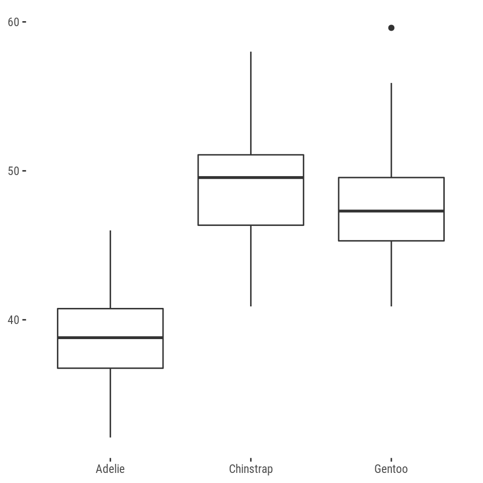
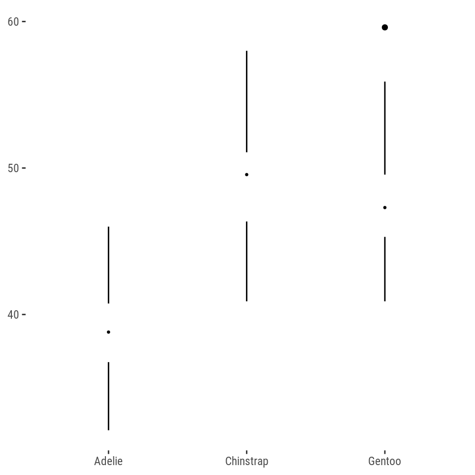
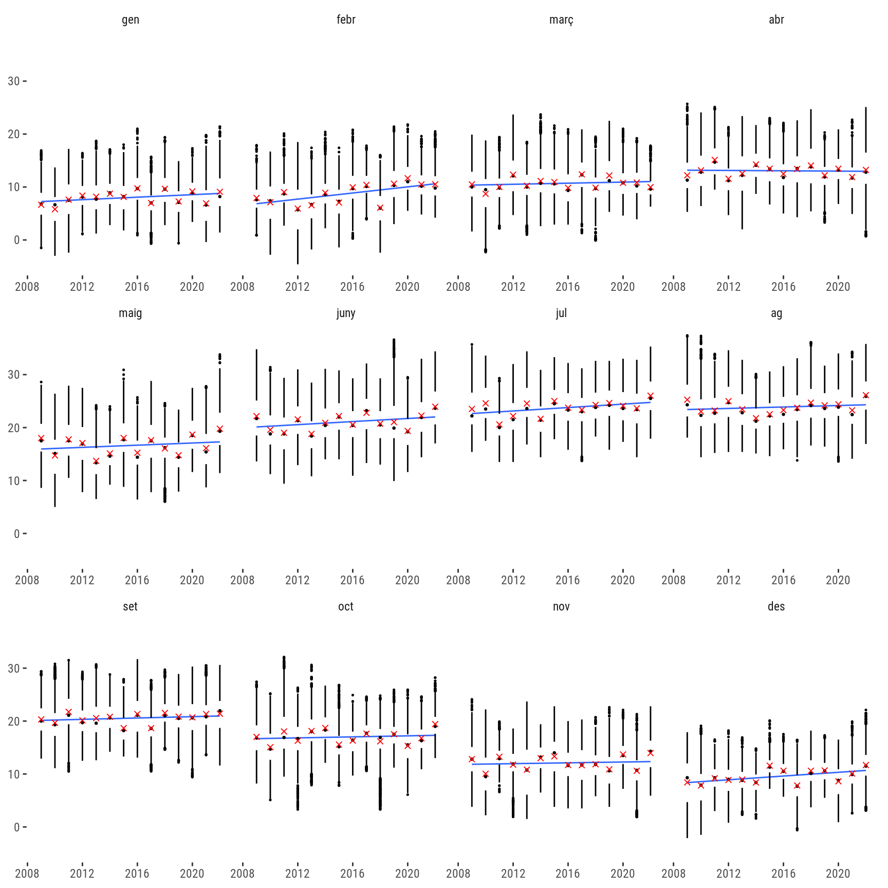

Show the code
library(tidyverse)
library(httr)
library(jsonlite)
library(ggthemes)
library(palmerpenguins)Marc Bosch
February 8, 2023
El meteocat ofereix en obert les dades de tots els observatoris meteorològics de Catalunya d’entre 2009 i avui, actualitzades en directe. Avui aprofito per presentar l’evolució de la temperatura de cada mes entre 2009 i 2022 a l’Observatori Fabra. De pas, aprofito per compartir una manera diferent de presentar els gràfics de caixa i bigotis segons les idees de l’estadístic i politòleg Edward Tufte. Però anem a pams, primer, baixem les dades del portal de la Generalitat i mirem quina pinta fan.
| codi_estacio | codi_variable | data_lectura | valor_lectura |
|---|---|---|---|
| D5 | 32 | 2009-01-01T00:00:00.000 | 9.1 |
| D5 | 32 | 2009-01-01T00:30:00.000 | 9.6 |
| D5 | 32 | 2009-01-01T01:00:00.000 | 9.7 |
| D5 | 32 | 2009-01-01T01:30:00.000 | 9.9 |
| D5 | 32 | 2009-01-01T02:00:00.000 | 10 |
| D5 | 32 | 2009-01-01T02:30:00.000 | 10.2 |
Veiem el codi de l’estació (Observatori Fabra), el codi de la variable (temperatura), la data i l’hora en què s’ha pres la mesura (un cop cada mitja hora) i el valor (és a dir, la temperatura registrada).
I un cop les tenim, fem el gràfic. Per representar la informació he triat fer un gràfic de caixa i bigotis, que ens indica on són el mínim, el primer quartil, la mediana, el tercer quartil i el màxim. Els valors extrems (és a dir, molt més allunyats dels mínims i màxims), els representa com a punts per a mostrar que estan molt allunyats de la distribució més habitual dels gràfics. Normalment estem acostumats a que facin una pinta així.

Però la veritat, jo el trobo poc estètic, i m’agrada més la reinterpretació que en fa Edward Tufte. Igual que en el model tradicional, trobem una línia que representa la distància entre el mínim i el primer quartil i el màxim i el tercer quartil respectivament, però la caixa queda substituida per un espai en blanc i la mediana per un punt. Molt més elegant i igual d’informatiu, si m’ho pregunteu.

p <- temps |>
as_tibble() |>
mutate(valor_lectura = as.numeric(valor_lectura),
data_lectura = lubridate::as_datetime(data_lectura)) |>
mutate(mes = lubridate::month(data_lectura, label = TRUE, locale = Sys.getlocale("LC_TIME")),
any = (lubridate::year(data_lectura)),
mes = str_remove(mes, "de "),
mes = str_remove(mes, "d’"),
mes = factor(mes, levels = c("gen", "febr", "març", "abr", "maig", "juny",
"jul", "ag", "set", "oct", "nov", "des"))) |>
filter(any < 2023) |>
ggplot(aes(x = any, y = valor_lectura)) +
geom_smooth(method = "lm",
lwd = 0.5,
se = FALSE) +
ggthemes::geom_tufteboxplot(aes(group = any), stat = "boxplot", outlier.size = 0.25) +
stat_summary(fun = mean, fun.args = list(na.rm = TRUE), aes(group = any),
geom = "point", shape = 4, colour = "red") +
facet_wrap(~mes,
scales = "free_x") +
ggthemes::theme_tufte(base_family = "Roboto Condensed") +
theme(axis.title.x = element_blank(),
axis.title.y = element_blank())
p
Veiem que els febrers i els desembres són els mesos que més s’han escalfat entre 2009 i 2022, seguits de prop de maigs, junys, juliols i, un pèl menys, setembres. La primavera i la tardor s’avancen cada cop més, com ja sabem de sobres.